Overview
Flow Graph is the built-in tool that is used to control events and game logic within the levels.
The Flow Graph window consists of nine different parts:
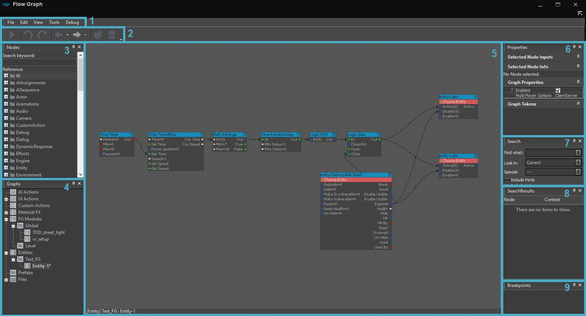
Apart from the main editing pane, all windows can be moved, re-sized and docked into each other. The main editing pane will always be in the background and use all the space that is available.
1. Menu Bar
File
eOption | Description |
|---|---|
New | Opens an empty Flow Graph. (Preferred method is to create flowgraphs directly on entities placed in the world) If you use this method, you must Save All External Graphs as .xml format. |
New AI Action... | Create a new AI Action (Saved to the correct folder) |
New UI Action... | Create a new UI Action (Saved to the correct folder) |
New Custom Action... | Create a new Custom action (Saved to the correct folder) |
New FG Module... |
|
New MaterialFX Graph... | Creates a new MaterialFX Graph which by default includes the basic MaterialFX related nodes. |
Save All External Graphs | Saves all the external graphs. |
Import... | Imports a Flow Graph. (.xml) |
Export... | Exports a Flow Graph. (.xml) |
Edit
Option | Description |
|---|---|
Undo | Undoes the last action. |
Redo | Redoes a previously undone action. |
Cut | Cuts selected node(s). |
Copy | Copies selected node(s). |
Paste | Pastes selected node(s) to the location under the cursor. This does not include any connected links. |
Paste with Links | Pastes the nodes from the clipboard, including all the connecting links, to the location under the cursor. |
Delete | Deletes the selected node(s). |
Find | Makes the cursor jump to the Search window (see below). |
View
The View window lets you hide/unhide all the different windows within the Flow Graph tool, such as the Components window or the Breakpoints window.
For obvious reasons, the Main Window cannot be hidden. Under the components section, you can choose to display all types of Flow Graph node.
Tools
Option | Description |
|---|---|
Edit Graph Tokens... | Lets you create and edit Flow Graph Tokens. For more information on Flow Graph Tokens, click here. |
Edit Module... | Lets you edit a Flow Graph Module. For more information on Flow Graph Modules, click here. |
Debug
Option | Description |
|---|---|
Enable Debugging | Turns on Debugging mode. This highlights the logic flow with the graphs. This is represented by the yellow highlights on the links. |
Erase Debug Information | This clears the information (yellow trails) from the debugging info to start afresh, next time you jump in-game. |
Ignore Flow Graph Type | Ignores the type of the Flow Graph when debugging. (Used to filter what the debugging is run on.) Can all be left on as default. |
Menu Icon
The 
2. ToolBar
Under the Menu Bar we have the quick access toolbar.
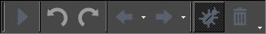
Button | Description |
|---|---|
Start Flow Graph Update | Resumes the game after a breakpoint has been hit in Debugging mode. |
Undo | Undoes the user's last action. |
Redo | Redoes the user's last action. |
Previous | Goes back to the previous Flow Graph. |
Next | Goes forward to the next Flow Graph. |
Toggle Visual Flow Graph Debugging | Turns on Debugging mode. This highlights the logic flow with the graphs. This is represented by the yellow highlights on the links. |
Erase Flow Graph Debugging Results | This clears the information (yellow trails) from the debugging info to start afresh, next time you jump in-game. |
3. Components Window
The Components Window is divided into two sections: the Search field and the Node List.
The Search Field
In the Components Search Field, you can type any part of a name of a node and it will filter out all the nodes that have that text in their names. You will then be able to navigate to only those nodes in the Node List below.
The Node List
In the Node List, all usable Flow Graph nodes can be found. Component nodes are nodes which do not represent an entity in the level, but have an abstract functionality that may use one or more entities. e.g. Math nodes.
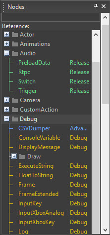
Adding Nodes to a Graph
The nodes are sorted by category and can be added to the current Flow Graph in three ways:
- Dragging a node from the component list and dropping it onto the background pane.
- Clicking the right mouse button on the background pane in the Main Window and selecting a node from the AddNode menu point in the context menu. This displays the same information as the full component list.
- In the main Flow Graph window, press Q to enable a popup quick list. Keep typing the name of the node you are looking for, and it will reduce the list down as much as it can. When several nodes share similar names, it will present you with a list (1/15) and using the up / down arrows you can cycle through the short list. Press enter once you have your desired node to add it to the graph.
Categories
Nodes can belong to different categories. Which nodes are visible in the component list can be configured in the View → Components menu. There are four node categories:
Category | Description |
|---|---|
Release | Approved nodes mostly have basic, easy to use functionality and are safe to use. |
Advanced | Advanced nodes feature more complex functionality and are advised to be enabled for the more experienced users. |
Debug | Nodes mainly made for debugging purpose. |
Obsolete | Old node, still working but not advised to use. Will be removed in future releases to be possibly replaced by a new/other node. |
4. Graphs List
This window provides an overview for the different graphs and entities. Entities can only have 1 graph attached to them, not multiple.
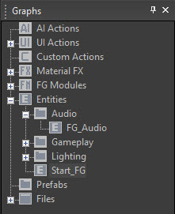
To switch between graphs:
- Click on the + next to Entities to expand the list. (The + sign is only available if there are child graphs to the folder.)
- This list shows you all the available entities with Flow Graphs attached (if present in the level)
- Simply clicking on the different items in the list will display the Flow Graphs information attached to that entity
- Right-click on a list item to bring up the context-menu, which offers different options depending on the graph:
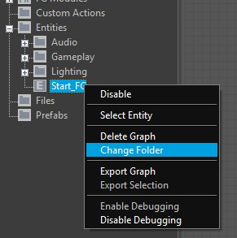
Option | Description |
|---|---|
Disable/Enable | Disables or enables a Flow Graph. By default all Flow Graphs are enabled. A disabled Flow Graph will not be executed. (helpful for debugging) |
Change Folder | A Flow Graph can be placed in a sub-folder. If a new folder name is entered a new folder will be created. This is the only context menu option available for AIAction graphs. |
Select Entity | Selects the entity in the 3d viewport that the flowgraph is attached to. |
Remove Graph | Completely removes the Flow Graph. |
In addition to the normal entity Flow Graphs, all AIAction graphs are listed in this window. An AIAction graph is a special type of graph which is executed by a Smart Object rule.
5. Main Window
This is the main window, where all the editing takes place. Nodes can be added, deleted, moved, and linked here. This window needs a lot of screen space to work effectively.
The best way to work with it is to place it on the second monitor (if available) and keep it open all the time because it may be necessary to switch between the game window and the Flow Graph often.
- Navigation: The main editing pane is not limited and can be extended in any direction. To navigate, click and hold the right mouse button to pan around the graph. The scrollbars of the window can also be used. The mouse wheel is used to zoom in and out.
- Selection: Nodes can be selected with the left mouse button and deselected by clicking somewhere in the background pane. Multiple nodes can be selected by clicking in the background pane with the left mouse button and drawing a drag box around the nodes that need to be selected. Double-clicking a node will select the assigned entity in the level.
- Context menu: When you right-click the background pane, the context menu will be displayed.
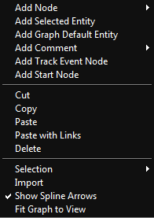
Option | Description |
|---|---|
Add Node | Adds a node to the graph. Similar to dragging and dropping a node from the components window into the main editing pane. |
Add Selected Entity | Adds the entity that is currently selected in the 3D viewport to the Flow Graph. A new node will be created for this entity and inserted at the position of the cursor. |
Add Graph Default Entity | The container entity of the currently active Flow Graph will be added as a new node. |
Add Comment | This opens up a sub-menu where you can select from:
|
Add Track Event Node | This is a shortcut to quickly access the often used Track Event Node (which is used by Trackview). |
Add Start Node | This is a shortcut to the most commonly used Start Node. |
Cut | Cuts the selected node(s) to the clipboard and removes it from the main editing pane. |
Copy | Copies the selected node(s) to the clipboard. |
Paste | Inserts one or more nodes from the clipboard into the Flow Graph at the cursor position. Links are not copied. |
Paste with Links | Inserts one or more nodes from the clipboard in the Flow Graph at the cursor position, copying all links the nodes were connected with. |
Delete | Deletes the selected nodes. |
Selection (only shows when a node is selected) | Opens a sub-menu where you can select from:
|
Import | Imports an external Flow Graph from an *.xml file. |
Show Spline Arrows | Selects whether links are drawn as curved splines or straight links. |
Fit Graph to View | Automatically zooms the current Flow Graph to the graph's extent. |
The usual windows shortcuts Ctrl-C, Ctrl-V, etc. can also be used while editing in the Flow Graph. Additionally Ctrl-Shift-V pastes the nodes from the clipboard including all links.
6. Properties
The Properties panel is specific to the node currently selected. All node parameters can be edited here.
In addition to the input controls there is an information tab that provides a description of the currently selected node.
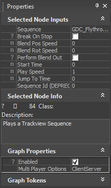
7. Search Panel
Flow Graphs and Action graphs can be searched for specific nodes and/or values. The search options can be configured to include or exclude different parts of the nodes. The search can also be limited to action graphs or entities.
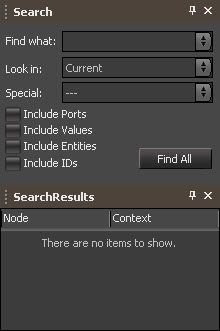
The Look in drop-down list defines which graphs will be searched:
Option | Description |
|---|---|
Current | Only the currently opened graph will be searched. |
AIActions | Only action graphs will be searched. |
Entities | Only entity based graphs will be searched. |
All Flowgraphs | Both entity and action graphs will be searched. |
The 'Special' drop-down list offers more options to exclude certain categories of nodes. For example all Work in Progress nodes can be excluded from the search. Additionally, there is a set of checkboxes to select if ports, values, entities or IDs should be included in the search.
All windows can be moved around and snapped as they fit to the available screenspace.
8. Search Results Panel
The search results will be displayed in the SearchResults window and a double-click will jump to the corresponding graph.
If you searched with "All Flowgraphs" this will separate the results list into the individual graphs first, then every instance of that result within that graph.
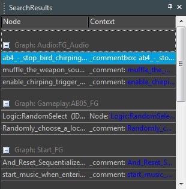
9. Breakpoints Panel
This panel shows the breakpoints you have set in order to debug the Flow Graph. Breakpoints can be added to input and output ports. These will be represented in the graph as a red ball next to the port you set it on. Once the breakpoint has been triggered by the game, the game will pause until you approve it by pressing F5, or clicking the continue arrow and the game will resume.
- Assigning breakpoints are set by pressing right clicking on the input / output port you want to assign it to and choosing Add Breakpoint.
- Un-assigning breakpoints are removed by right clicking on the input / output port you want to remove it from and choosing Remove Breakpoint.
- Alternatively, through the breakpoint window, you can right-click on the specific breakpoint in the list and remove the individual breakpoint or if you select the top parent, remove all the breakpoints at once from the graph.
- Once a breakpoint has been triggered, the game pauses waiting for input from the user. Press the Play button on the Flow Graph toolbar to continue playing the game.
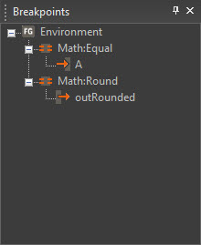
In the main graph window, the following 2 pictures show you the 2 states of a set and a triggered breakpoint.
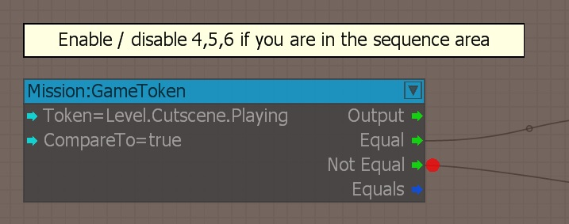
Breakpoint set on the Not Equal output. Note the red ball
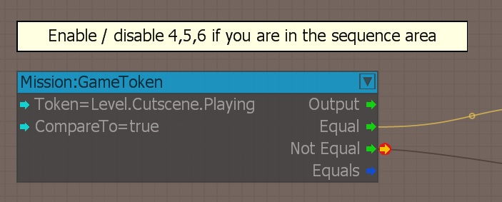
Breakpoint triggered in-game. Note the additional yellow arrow on the red ball
For a detailed explanation of how debugging works in the Flow Graph tool, click here.
How to Use the Flow Graph
For more information on how to use this tool, see this page.